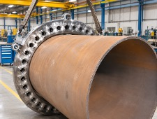
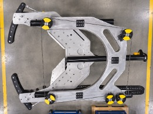

Specialised subsea tooling
Design, manufacture and sales. Not every problem is best solved by conventional methods. Purpose-built tools reduce operational time, improve safety and deliver cost savings without compromising quality or performance.
We design, engineer, fabricate and test in-house, drawing on the experience and knowledge of our engineers and technicians to ensure every step of the design and development process supports smooth, safe offshore operations, whether by customising existing tooling or developing completely new concepts and innovative tools.
We have successfully developed and delivered a wide range of custom-engineered subsea tools for projects of varying scale and complexity. These solutions have reduced project costs, shortened offshore operations and delivered measurable value, often exceeding client expectations.
Featured tools

Flange bolt speed loader
Large pipeline flange bolts are heavy, and divers handle them manually, a slow, labour-intensive task. They can weigh up to 70 kg each, and a 48-inch flange may need 44, meaning a diver could handle up to three tonnes of bolts. The speed loader lets the deck crew preload the bolts into a template topside. The loaded tool is deployed to the worksite, installed around the pipe next to the flange pair and hydraulically pulled into place, inserting all bolts automatically. The result is less diver fatigue, less manual handling of heavy, sharp bolts, and higher productivity.

Hydraulic diamond wire cutter
A cold-cutting system for pipelines, risers, conductors, multi-string conductors, jackets and caissons, which can be deployed from the surface or by ROV and is powered by the ROV’s hydraulics. It cuts through most protective coatings, has a fine metering valve to optimise efficiency, and is built from marine-grade aluminium alloy and stainless steel for low weight and high corrosion resistance. Hot cutting is slow, manual and high risk, and thermal cutting cannot be used where oil or gas may be present. The diamond wire cutter allows safe cutting with minimal diver intervention.
4:3
Pipe pull-in alignment aid
A hydraulically powered aid that bolts to the spool piece before deployment. It stabs onto guideposts on the manifold to give correct positioning ahead of pipe alignment.
4:3
Hydraulic dredge pump
A lightweight, efficient pump for moving large volumes of liquid carrying up to 25% solids by volume, with an abrasion-resistant urethane housing that is resistant to petrochemical solvents.
Need a tool built for your job?
If a task is slow, costly or hazardous with conventional methods, tell us about it and we will assess whether a purpose-built solution makes sense. Tools are available for sale or rental.